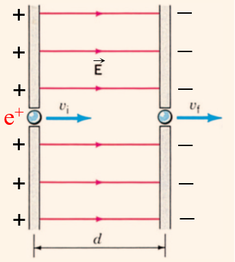
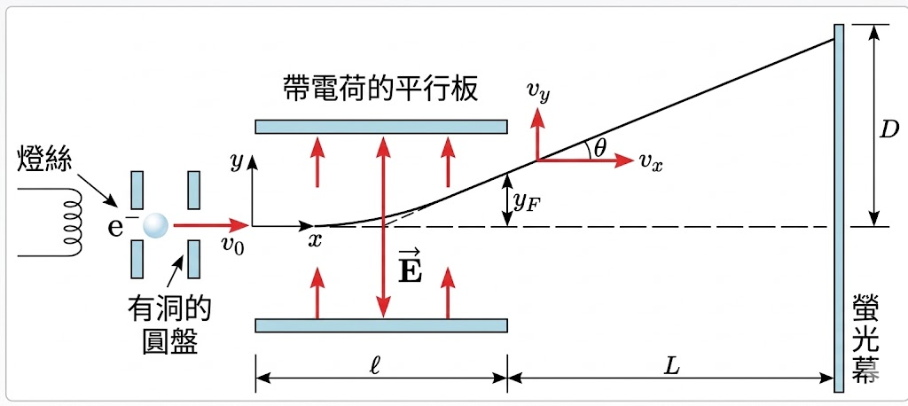
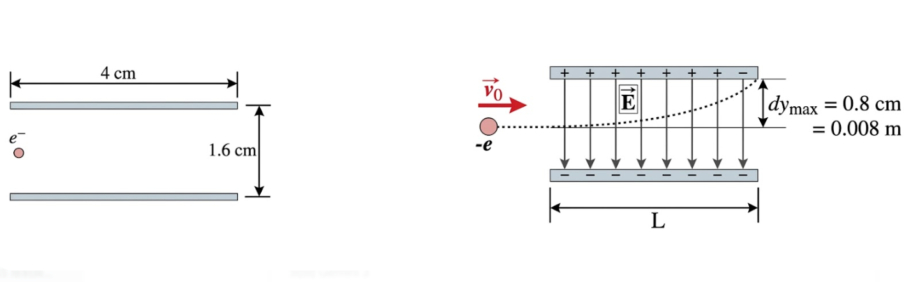
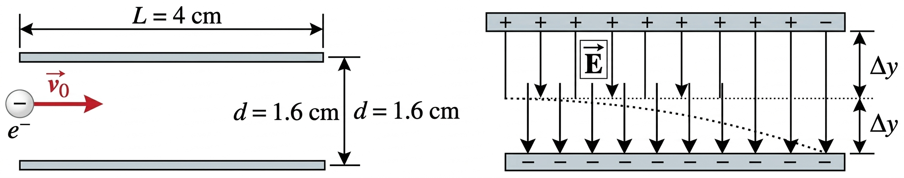
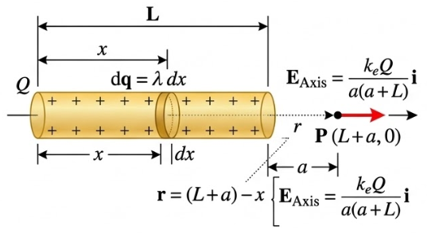
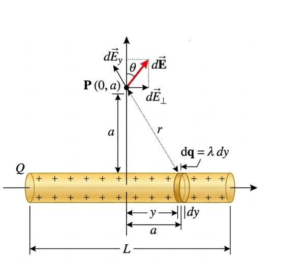
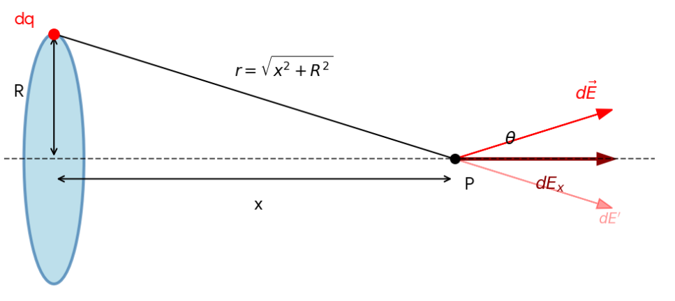
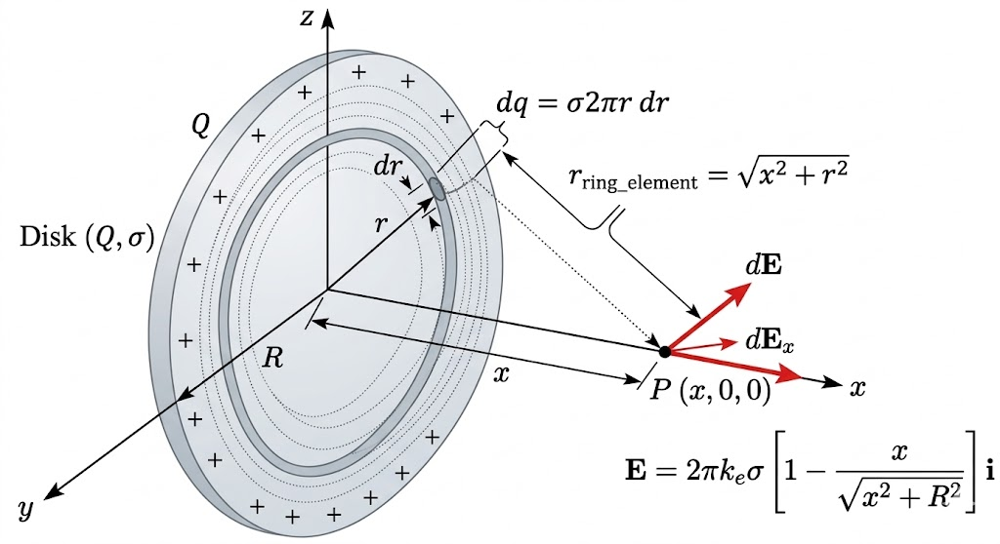
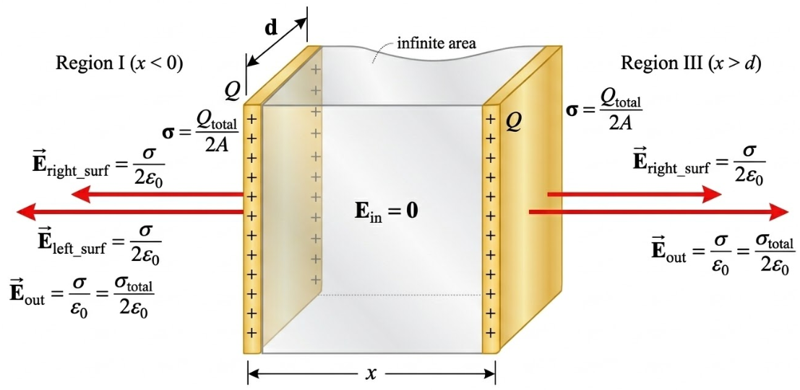

普通物理
節錄課本中部分公式 定義 推導 例題
23.1 電場
電場強度 $\vec{E}$, 定義為在該點放置一個正檢驗電荷(Test Charge)$q_0$ 時, 該電荷所受到的靜電力 $\vec{F}$與其電量之比
- 單位: 牛頓/庫侖 ($N/C$) 或 伏特/公尺 ($V/m$)。
- 向量性: 電場為向量, 其方向與正檢驗電荷受力方向相同
而由庫侖定律可得知, 大小為 $Q$ 的源電荷對距離 $r$ 處的檢驗電荷 $q_0$ 施加的力為
代入電場定義後可得
若空間中有多個點電荷 $q_1, q_2, \dots, q_n$，則某一點的總電場強度即為各別電荷在該點產生電場的向量和
習題
\( \text{Q: }位於地球表面約有100 N/C的電場直指向下, 求在電場內一質子所受電力與重力為何? \)
\(\text{A: }\)
\[\text{靜電力: } \vec{F_e} = q\vec{E} = (1.60 \times 10^{-19} \text{ C}) \times (100 \text{
N/C}) = 1.6 \times 10^{-17} \text{ N}\uparrow\]\[\text{重力: } \vec{F_g} = m_e \vec{g} =
(9.11 \times 10^{-31} \text{ kg}) \times (9.8 \text{ m/s}^2) \approx 8.9 \times 10^{-30}
\text{ N}\downarrow\]
23.2 電力線
為表示多個電荷所產生的電場, 使用電力線表示電場分布. 電力線由正電荷出發且終止於負電荷,
線段之間不相交. 而電場強度正比於電力線密度, 即通過垂直電場方向單位面積上的電力線數目.
設一點電荷發出$N$條電力線,
在距電荷$r$處, 這些線分布於$4\pi r$的球面區域, 所以電力線密度為$N/4\pi r$.
23.3 電場與導體
靜電平衡條件下，導體表面上各點的電場均垂直其表面
23.4 均勻靜電場中電荷的移動
當電子或質子移動時，因所受重力微弱，通常僅需考慮靜電力。在電場 $\vec{E}$ 中，質量為 $m$ 且電荷為 $q$ 的帶電粒子受靜電力 $\vec{F}=q\vec{E}$ 作用，由牛頓第二定律可得其加速度：
當電場為均勻時，加速度為定值，可使用等加速度運動方程式進行分析。
習題練習
\( \text{Q: } \) 若於地球表面有 $120 \text{ N/C}$ 的電場直指向下, 求一質子所受之力與其加速度
\( \text{A: } \)
\[ \vec{F} = q\vec{E} = (1.60 \times 10^{-19} \text{ C}) \times (120 \text{ N/C}) = 1.92 \times 10^{-17} \text{ N} \uparrow \] \[ a = \frac{F}{m_p} = \frac{1.92 \times 10^{-17} \text{ N}}{1.67 \times 10^{-27} \text{ kg}} \approx 1.15 \times 10^{10} \text{ m/s}^2 \uparrow \]\( \text{Q: } \) 一質子沿均勻電場 $\mathbf{E} = 10^3\mathbf{i} \text{ N/C}$ 前進 $4 \text{ cm}$, 其起始速度為 $10^5 \text{ m/s}$, 求其末速度

$\text{Ans:}$
1. 計算加速度 $a$：
2. 利用公式 $v_f^2 = v_i^2 + 2a\Delta x$ 求得末速
\(\text{EX}\)
在陰極射線管中，電子以起始速度 $v_0\mathbf{i}$ 進入長度為 $\ell$、電場為 $\mathbf{E} = -E\mathbf{j}$ 的勻強電場區域。由於電子受到的靜電力恆定，其軌跡在板間呈拋物線。
\( \text{Q: } \) 求：(a) 電子由平板射出時的垂直位置 $y_F$；(b) 射出時的角度 $\theta$；(c) 若平板末端與螢光幕相距 $L$，求在螢光幕上的總垂直位移 $D$。

$\text{Ans: }$
(a) 射出時的垂直位置 $y_F$
電子在電場中經歷的時間為 $t = \frac{\ell}{v_0}$。由 $a_y = \frac{eE}{m}$，可得：
(b) 射出時的角度 $\theta$
利用速度的分量比值：$v_x = v_0$，$v_y = a_y t = \frac{eE\ell}{mv_0}$
(c) 螢光幕上的總位移 $D$
離開電場後電子做直線運動，額外垂直位移 $\Delta y = L \cdot \tan \theta$：
\(\text{EX}\)
一個電子進入兩水平平行板間區域，以水平初速 $v_0\mathbf{i} = 2 \times 10^6\mathbf{i} \text{ m/s}$ 在兩板正中間行進。板面長度 $L = 4 \text{ cm}$，板間距離為 $1.6 \text{ cm}$。
\( \text{Q: } \) 欲使電子順利通過板間區域而不撞擊任一板子，所能施加的最大垂直電場強度 $E_{\text{max}}$ 為多少？

$\text{Ans: }$
1. 分析邊界條件
電子從兩板正中間入射，板距為 $1.6 \text{ cm}$。欲不撞板，其最大垂直位移必須小於或等於板距的一半： $$\Delta y_{\text{max}} = \frac{1.6 \text{ cm}}{2} = 0.8 \text{ cm} = 0.008 \text{ m}$$
2. 計算穿越時間 $t$
電子在水平方向做等速運動，穿越長度 $L = 4 \text{ cm} = 0.04 \text{ m}$ 所需時間為：
3. 求解最大電場 $E_{\text{max}}$
電子在垂直方向受電場力做等加速度運動。利用公式 $\Delta y = \frac{1}{2} a t^2 = \frac{1}{2} \left( \frac{eE}{m} \right) t^2$，將其轉化為求解 $E$：
** 故最大垂直電場強度為約 $228 \text{ N/C}$。**
\(\text{EX}\)
一個電子進入兩帶電平行板間區域，在兩板正中間行進。板面長度 $L = 4 \text{ cm}$，板間距離為 $1.6 \text{ cm}$。當所能施加的最大垂直電場強度為 $E_{\text{max}} = 57 \text{ N/C}$ 時，電子恰可順利通過板間區域而不撞擊任一板子。
\(\text{Q: }\) 試求電子之水平初速大小 $v_0$ 約為多少？

$\text{Ans: }$
1. 分析邊界條件
電子從兩板正中間入射，板距為 $1.6 \text{ cm}$。欲不撞板，其在電場中的最大垂直位移為： $$\Delta y_{\text{max}} = \frac{1.6 \text{ cm}}{2} = 0.8 \text{ cm} = 0.008 \text{ m}$$
2. 建立運動公式
電子在垂直方向（$y$軸）做等加速度運動：$\Delta y = \frac{1}{2} a t^2$，其中 $a =
\frac{eE}{m}$。
電子在水平方向（$x$軸）做等速運動，穿越板長 $L=4 \text{ cm}=0.04 \text{ m}$ 所需時間：$t
= L / v_0$。
3. 代值求解初速 $v_0$
將 $\Delta y_{\text{max}}$ 代入上式並轉化為求解 $v_0$：
最後求得初速： $$v_0 = \sqrt{1.0011 \times 10^{12}} \approx 1.0 \times 10^6 \text{ m/s}$$
** 故電子之水平初速 $v_0$ 約為 $1.0 \times 10^6 \text{ m/s}$。**
23.5 連續電荷分布
當電荷分布在一個體積、表面或線段上且數量極大時，我們可以將其視為連續分布。此時，空間中某點的電場 $\vec{E}$ 必須透過對所有電荷微元 $dq$ 所產生的微小電場 $d\vec{E}$ 進行積分：
電荷密度
根據分布的維度，定義三種不同的電荷密度
| 分布類型 | 符號 | 定義式 | 單位 |
|---|---|---|---|
| 線電荷密度 | $\lambda$ | $dq = \lambda \cdot d\ell$ | $\text{C/m}$ |
| 面電荷密度 | $\sigma$ | $dq = \sigma \cdot dA$ | $\text{C/m}^2$ |
| 體電荷密度 | $\rho$ | $dq = \rho \cdot dV$ | $\text{C/m}^3$ |
特殊形狀電場
\(\text{Pf: 細棒軸端電場}\)
一均勻帶電細棒長 $L$，總電荷 $Q$。點 $P$ 位於棒的延長線上，距離最近的一端為 $a$。
\( \text{Q: } \) 證明點 $P$ 之電場為 $E = \frac{k_e Q}{a(a+L)}$。

$\text{Ans: }$
取棒左端為原點，棒分布在 $x \in [0, L]$。點 $P$ 在 $x = L + a$ 處。取微元 $dq = \lambda dx'$，$x'$為所取電荷微元到原點的距離，則電荷微元距離點 $P$ 為 $r = (L+a) - x'$：
\(\text{Pf: 細棒中垂線上的電場}\)
\( \text{Q: } \) 一均勻帶電細棒長 $L$，點 $P$ 距離棒心為 $a$。證明點 $P$ 之電場為 $E = \frac{2k_e \lambda \sin\theta_0}{a}$，其中 $\theta_0$ 為端點張角。

$\text{Ans: }$
由其對稱性知 $E_y = 0$。僅剩垂直於棒的 $E_x$：
** 當 $L \to \infty$ 時，電場趨近於 $E = \frac{2k_e \lambda}{a}$。**
\(\text{Pf: 均勻帶電環電場}\)
考慮一半徑為 $R$、總電荷為 $Q$ 的均勻帶電圓環。在通過環心且垂直於環面的軸線上（距離環心 $x$ 處）的電場強度。
\( \text{Q: } \) 試證明該點的電場公式為 $E = \frac{k_e Q x}{(x^2 + R^2)^{3/2}}$。

$\text{Ans: }$
水平垂直電場分析
由於圓環的對稱性，垂直於軸向的電場分量會互相抵消，因此總電場僅存在於 $x$ 軸方向： $$dE_x = dE \cos \theta = \left( k_e \frac{dq}{r^2} \right) \frac{x}{r}$$
積分求解
其中 $r = \sqrt{x^2 + R^2}$ 為定值，故：
** 當 $x \gg R$ 時，此結果會退化為點電荷公式 $E \approx \frac{k_e Q}{x^2}$。**
\(\text{Pf: 均勻帶電圓盤}\)
考慮一個半徑為 $R$、總電荷為 $Q$ 的均勻帶電薄圓盤，其面電荷密度為 $\sigma = Q / \pi R^2$。我們欲求在通過盤心且垂直於盤面的軸線上（距離盤心 $x$ 處）點 $P$ 的電場強度。
\( \text{Q: } \) 試證明該圓盤在軸線上產生的電場公式為 $E = 2\pi k_e \sigma \left[ 1 - \frac{x}{\sqrt{x^2 + R^2}} \right]$。

$\text{Ans: }$
選取微元
將圓盤看作由許多半徑為 $r$、寬度為 $dr$ 的薄圓環組成。 每一層圓環的面積為 $dA = 2\pi r dr$，所帶電荷量為 $dq = \sigma dA = \sigma (2\pi r dr)$。
利用圓環公式
根據上一節圓環的結論，半徑為 $r$ 的圓環在軸線上產生的微小電場 $dE$ 為：
3. 積分求解 (Integration)
對半徑 $r$ 從 $0$ 積分到 $R$：
特殊情況討論
- 當 $R \to \infty$（無限大帶電平面）： 電場變為恆定值 $E = 2\pi k_e \sigma = \frac{\sigma}{2\varepsilon_0}$。
- 當 $x \gg R$： 利用二項式展開，公式會退化回點電荷形式 $E \approx \frac{k_e Q}{x^2}$。
\(\text{Pf: 無限大厚導體平板}\)
考慮一厚度為 $d$ 的無限大導體平板，帶有總面電荷密度 $\sigma $。根據導體特性，電荷會平均分布在左、右兩個表面，每個表面的面電荷密度為 $\sigma = \frac{\sigma}{2}$。
\( \text{Q: } \) 試求導體平板外部與內部的電場強度。

$\text{Ans: }$
導體特性分析
在靜電平衡狀態下：
- 導體內部電場 $E_{\text{inside}} = 0$
- 電荷僅分布在表面。對於無限大平板，電荷會對稱地分布在兩個外表面
疊加原理
將厚平板視為兩個「無限大薄平面」的組合，每個平面的電荷密度皆為 $\sigma$：
- 左表面產生的電場： $E_L = \frac{\sigma}{2\varepsilon_0}$，方向向外。
- 右表面產生的電場： $E_R = \frac{\sigma}{2\varepsilon_0}$，方向向外。
各區域電場計算
- 導體內部： 兩個表面的電場方向相反，互相抵消。 $$E_{\text{in}} = \frac{\sigma}{2\varepsilon_0} - \frac{\sigma}{2\varepsilon_0} = 0$$
- 導體外部： 兩個表面的電場方向相同，互相疊加。 $$E_{\text{out}} = \frac{\sigma}{2\varepsilon_0} + \frac{\sigma}{2\varepsilon_0} = \frac{\sigma}{\varepsilon_0}$$
若以總面電荷密度 $\sigma_{\text{total}} = 2\sigma$ 來表示，外部電場為： $$E_{\text{out}} = \frac{\sigma_{\text{total}}}{2\varepsilon_0}$$
23.6 電偶極
基本定義與電偶極矩 (Dipole Moment)
電偶極是由兩個電荷量相等 ($q$)、電性相反，且相距一段微小距離 $d$ 的點電荷所組成的系統。由電荷量與距離定義電偶極矩 ($\vec{p}$) 為：
電偶極矩方向規定負電荷指向正電荷。
電偶極產生的電場
考慮點 $P$ 位在電偶極的軸線上，距離中心點為 $r$。當 $r \gg d$ 時，透過疊加原理與二項式展開(方法類似求細棒中垂線上電場)，可導出：
點電荷電場隨 $1/r^2$ 衰減，但電偶極電場隨 $1/r^3$ 更快地衰減。
均勻外電場中的轉矩(Torque)
當電偶極置於均勻外電場 $\vec{E}$ 中，正負電荷受力方向相反，會形成一個使偶極轉向與電場平行的轉矩$\tau$：
大小為：$\tau = pE \sin\theta$ （$\theta$ 為 $\vec{p}$ 與 $\vec{E}$ 的夾角）。
電偶極的位能
改變電偶極在電場中的角度需要做功，這份功會儲存為系統的靜電位能。通常取夾角 $\theta = 90^\circ$ 時位能為零：
- 能量最低 (穩定平衡)： $\theta = 0^\circ$（$\vec{p} ,\, \vec{E} \, \text{同向}$），此時 $U = -pE$。
- 能量最高 (不穩定平衡)： $\theta = 180^\circ$（$\vec{p} ,\, \vec{E} \, \text{反向}$），此時 $U = +pE$。
CH24 高斯定理
24.1 電通量 (Electric Flux)
電通量 $\Phi_E$ 定義為穿過已知表面的電力線數目。在強度為 $E$ 的均勻電場中，通過面積為 $A$ 的平面的電通量為
其中 $\theta$ 是面積法向量 $A$ 與電場 $E$ 的夾角。若表面不平整或電場不均勻，則需使用積分定義：
24.2 高斯定律 (Gauss's Law)
對一帶正電電荷，做一假想球面，其半徑為$r$且以電荷位置作為球心。由電通量與球面公式推得通過此高斯球面的總電通量為
因電場$E$在整個表面皆為常數，故可從積分式提出。而面的積分化簡為圓表面積$4\pi r^2$。再代入庫侖定律以及$k=\frac{1}{4\pi\varepsilon_0}$
得出通過任一封閉高斯面的淨電通量，等於該面所包圍之淨電荷 $Q$ 的 $\frac{1}{\varepsilon_0}$ 倍
常見對稱分布的電場：
- 球殼外部 ($r \gt R$)：$E = \frac{kQ}{r^2}$，表現如同點電荷位於球心。
- 球殼內部 ($r \lt R$)：由於內部包圍電荷為零，故 $E = 0$。
- 均勻荷電球體內部 ($r \lt R$)：$E = \frac{kQr}{R^3}$，電場隨半徑線性增加。
- 無限長荷電直線：$E = \frac{2k\lambda}{r}$。
- 無限大平板：$E = \frac{\sigma}{2\epsilon_0}$。
24.3 導體 (Conductors)
處於靜電平衡的導體具備以下重要物理特性：
- 導體物質內部各處電場 $E = 0$
- 任何淨電荷皆分布於導體表面。
- 導體表面外側的電場必垂直於表面，其強度為 $E = \frac{\sigma}{\varepsilon_0}$
- 在曲率半徑較小的尖端區域，面電荷密度與電場強度較大
CH25 電位
電場強度描述的是每單位電荷受到的力，而電位描述的是空間中每單位電荷的位能
25.1 電位定義 (Electric Potential)
兩點間的電位變化量 $\Delta V$ 定義為單位電荷的靜電位能改變量
** 單位為伏特 (V)，即 $1 V = 1 J/C$ **
而$\Delta V$僅與場源電荷建立的電場有關, 而與測試電荷無關
25.2 均勻電場中的電位與電位能
在均勻電場中，因電場$E$為常數，電位差可表示為
** $\Delta \mathbf{s}$ 與 $\Delta V$ 僅與起始終止位置有關，而與路徑無關 **
** $\pm Ed$ 是與 $\mathbf{E}$ 平行之位移分量**
此處$d$為沿著/逆著電場之位移分量大小。而透過上式可得電場的對等單位
等位面(Equipotentials)：在等位面上移動電荷不需作功($\Delta V = 0$)，電力線永遠垂直於等位面，並指向電位較低之處。
25.3 點電荷與多電荷系統
對於點電荷$Q$附近的電位變化, 其電場為
於其他位置任選A、B兩點，使用$\Delta V = \int \mathbf{E} \cdot d\mathbf{s}$ 做轉換
對於距離點電荷 $Q$ 為 $r$ 處的電位（設 $r = \infty$ 為零位點）則為
多個點電荷系統的總電位即為各電荷產生的電位代數和
在電位為$V$的地方放置一電荷$q$，其系統所擁有的電位能為
若場源電荷為$Q$，則
當要計算多電荷系統的總位能時，需兩兩電荷計算一次電位能。即系統總電位能等於所有個別電位能之代數和
25.4 由電位求電場
電場為電位之負梯度，在某位移方向的分量為：
在直角坐標系中，電場 $\mathbf{E} = \mathbf{E}_x\mathbf{i} + \mathbf{E}_y\mathbf{j} +
\mathbf{E}_z\mathbf{k}$
，其極小位移 $d\mathbf{s} = dx\mathbf{i} + dy\mathbf{j} + dz\mathbf{k} $。故
對於 $E$ 在不同方向分量的計算，只針對所有分量的其中一個分量作為變數，而將其餘視為常數，此計算稱為偏導數，以符號 $\partial$ 代替 $d$
CH26 電容器與介電質
26.1 電容(Capacitance)
電容器是儲存電荷與能量的裝置，由兩塊導體板組成。而電容 $C$ 定義為每一單位電位差所能儲存的電荷數
** 其單位為法拉(F)，得$1F = 1 C/V $**
而電容器的電容量與其幾何形狀及之間介質有關
平行板電容器
由兩塊平板組成的電容，平板面積為 $A$ ，其板間距離為 $d$ ，且距離小到可忽略電場邊緣效應。若兩板各帶有相反電性的等量電荷 $Q$ ，則其電場大小
** 其中$\sigma = Q/A$為面電荷密度 **
而藉由均勻電場的電位差 $V = Ed$，可求得電容值 $C$
藉由上式得知 $\varepsilon_0$ 的另一單位表示法為 $ F/m $
26.2 電容器的組合
- 並聯 (Parallel)：各電容器電位差相等，總電荷為和。等效電容 $\displaystyle C_{eq} = C_1 + C_2 + \dots$
- 串聯 (Series)：各電容器電荷量相等，總電位差為和。等效電容 $ \displaystyle \frac{1}{C_{eq}} = \frac{1}{C_1} + \frac{1}{C_2} + \dots$
26.3 儲存能量與能量密度
電容器儲存的能量以電位能 $U_E$ 形式儲存，等於充電過程作功的總和
** 利用 $Q=CV$ 代換 **
26.4 電場的能量密度
考慮電容器所儲存的能量，已知平行板電容器的電容值為 $C$，平板之間電位差為 $V$，所儲存之能量為 $U_E$，則可改寫為
因電場所在之平板間體積為$Ad$，可得空間中電場的能量密度 $\mu_E$（每單位體積能量）為
26.5 介電質的效應 (Dielectrics)
在板間插入介電常數為 $\kappa$ 的絕緣物質（介電質），會導致：
- 電容量增加：$C_D = \kappa C_0$
- 若電荷固定，電位差與內部電場均減少為 $1/\kappa$ 倍：$E_D = E_0 / \kappa$
習題練習
Q: 一對平行板電容器 $C_1 = 5 \mu F$，$C_2 = 3 \mu F$，與 $12 V$ 電池並聯充電後切斷，重新以反向極性板連接。求末狀況下各板之電荷？
Ans:
1. 初電荷：$Q_1 = C_1 V = 60 \mu C$，$Q_2 = C_2 V = 36 \mu C$
2. 反接後總剩餘電荷 $Q_{total} = 60 - 36 = 24 \mu C$
3. 依電容比例分配電荷（因兩者電位差必須相等）：$Q'_1 : Q'_2 = 5 : 3$
4. 求解得 $Q'_1 = 15 \mu C$，$Q'_2 = 9 \mu C$